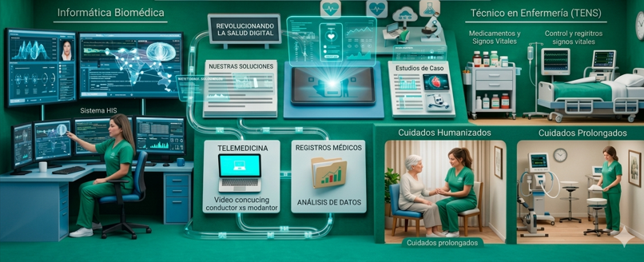
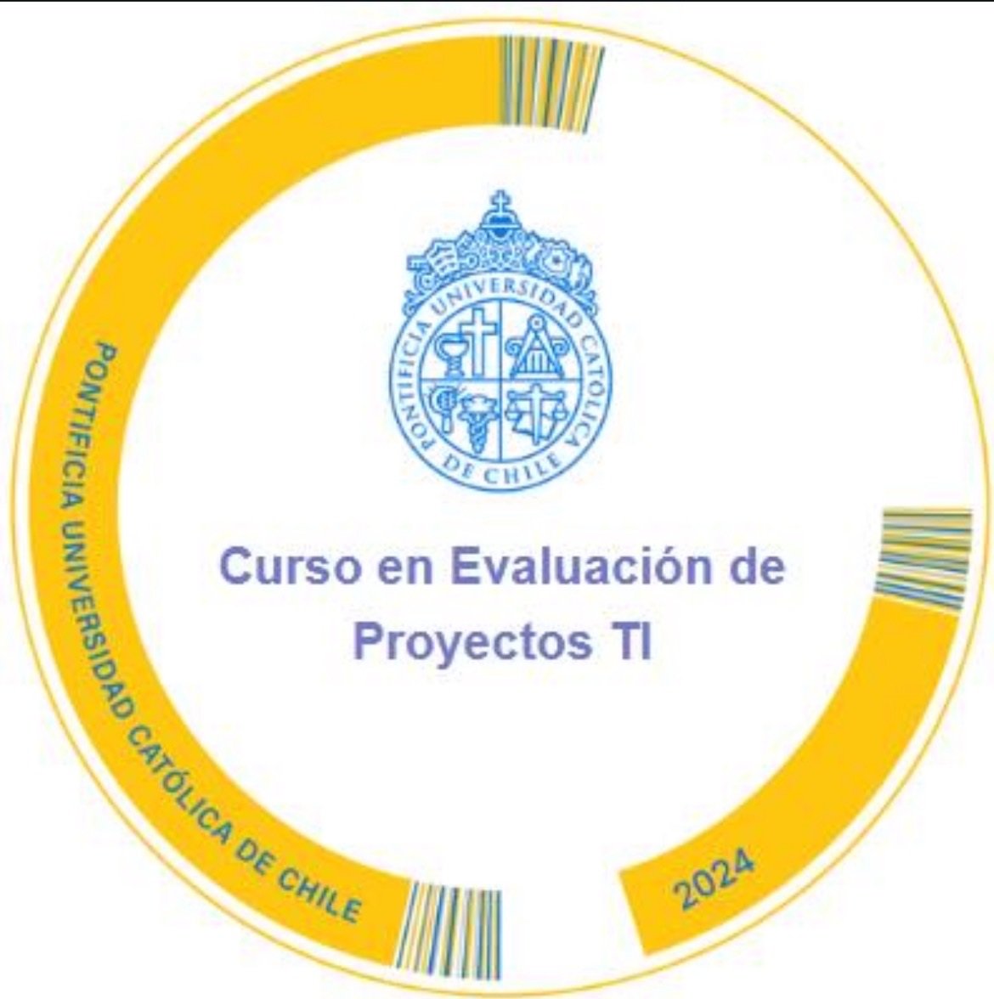

Melissa Zamorano
Consultora HIS | Salud Digital | Interoperabilidad HL7-FHIR | TENS
Impulso la transformación digital en salud mediante la implementación de sistemas clínicos, la optimización de procesos y la interoperabilidad de la información, contribuyendo a una atención más eficiente y segura.


Toca un módulo y descubre con cuáles se conecta. Un mapa interactivo de cómo funciona un sistema de información hospitalaria.
Toca un rol y descubre qué hace, qué puede ver y qué módulos usa. Incluye cómo nace un usuario en el sistema y una ruta de aprendizaje en Informática Biomédica.
Sobre mí
Me apasiona la salud digital y el impacto que la tecnología puede generar en la atención de las personas. Mi experiencia combina conocimiento clínico y gestión de sistemas de información en salud, permitiéndome colaborar en proyectos de implementación, optimización de procesos e interoperabilidad de datos clínicos.

Servicios en salud digital
Consultoría en Salud
- Levantamiento de requerimientos clínicos.
- Soporte funcional a usuarios.
- Optimización de flujos asistenciales.
- Validación de registros clínicos y codificación.
Informática biomédica
- Modelamiento y consultas SQL.
- Reportes biomédicos e inteligencia de negocios.
- Minería de datos aplicada a salud.
- Diseño de prototipos y mejora de procesos.
Servicios como TENS a domicilio
Atención clínica directa
- Administración de medicamentos IM, SC, EV y orales.
- Curaciones avanzadas y manejo de heridas complejas.
- Control de signos vitales y monitoreo clínico.
- Manejo de pacientes postoperatorios.
- Atención de pacientes crónicos y dependientes.
- Educación al paciente y familia.
Procedimientos especializados
- Instalación y manejo de vías periféricas.
- Retiro de puntos y suturas.
- Nebulizaciones y manejo respiratorio básico.
- Control glicémico y manejo de insulina.
- Toma de muestras (sangre, orina, cultivos).

Formación académica
Títulos
- Tecnóloga en Informática Biomédica – Duoc UC (2024).
- Técnico Superior de Enfermería – Duoc UC (2010).
Evaluación de Proyectos TI (EPTI)
- VAN, TIR, flujos de caja.
- Análisis de riesgos.
- Priorización de iniciativas.
- Gestión en entornos VUCA.

Certificaciones internacionales OPS/PAHO
Cursos Cerp
Reseñas
Paciente – Atención domiciliaria
Melissa me atendió después de una cirugía, sus curaciones fueron impecables y siempre me explicó todo con claridad.
— María A.
Consultoría HIS / TrakCare
Su capacidad para traducir necesidades clínicas en requerimientos técnicos permitió mejorar nuestros flujos asistenciales.
— Coordinador Clínico, SSMO
Paciente crónico
Su trato humano y profesionalismo han sido fundamentales en mi tratamiento.
— Jorge R.
Proyecto de salud digital
Su visión clínica–tecnológica permitió que el proyecto avanzara sin fricciones entre el equipo clínico y TI.
— Jefatura TI, Hospital público
Noticias importantes en salud
Revisa las últimas actualizaciones del Ministerio de Salud de Chile:
Puedes destacar aquí noticias relevantes, cambios en protocolos, nuevas guías clínicas o actualizaciones relacionadas con salud digital.
Contacto
Si necesitas atención de enfermería a domicilio, apoyo en proyectos de salud digital o consultoría funcional en sistemas HIS, puedes contactarme directamente: